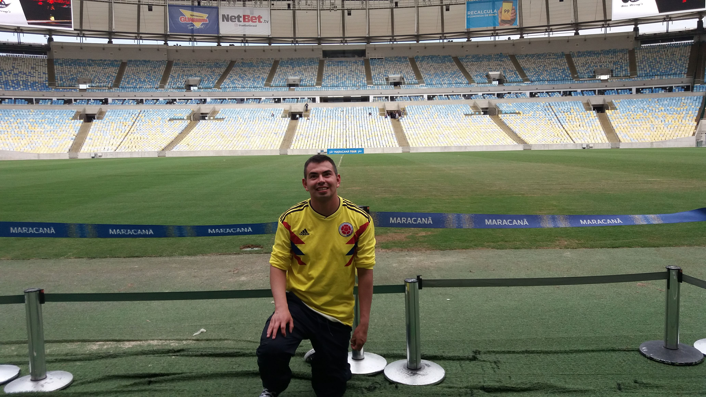
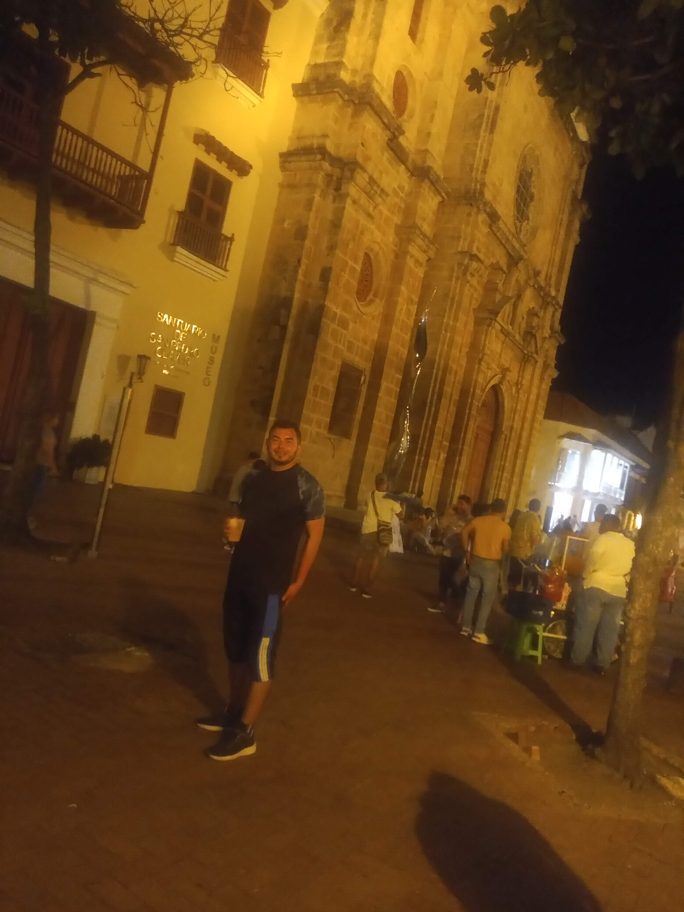
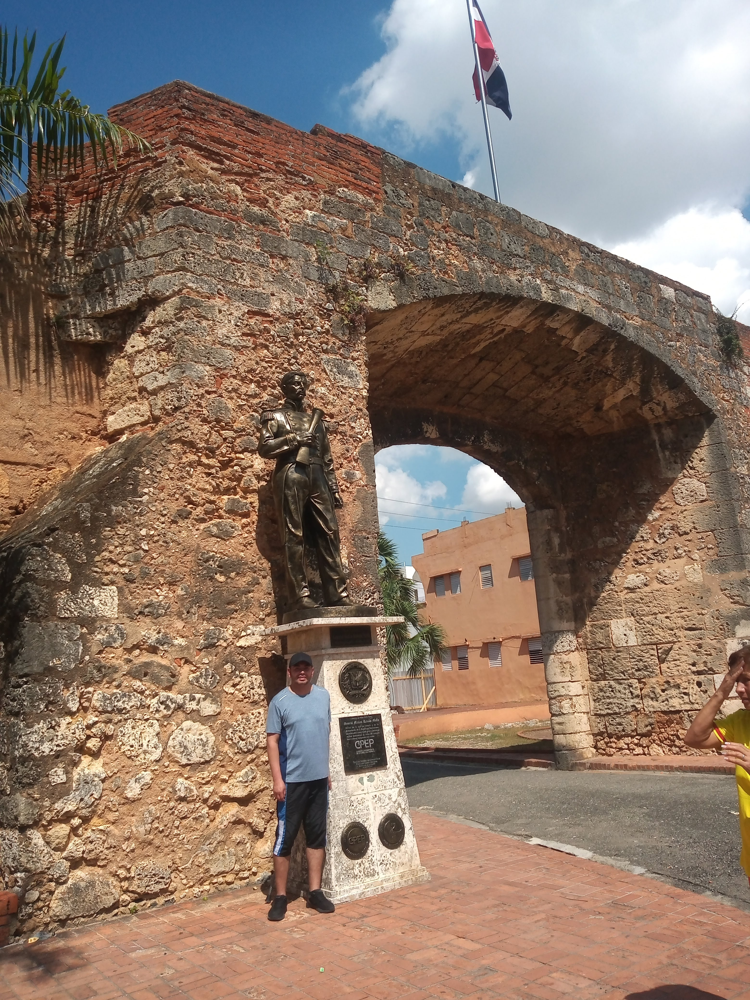

MIS LUGARES FAVORITOS
- RIO DE JANEIRO
- A cidade maravilhosa. Mi primer viaje al exterior
- CARTAGENA DE INDIAS
- Mis primeros viajes en avión con las personas que amo-mis mejores recuerdos
- SANTO DOMINGO RD
- Primer viaje al exterior con mi mamá-playas hermosas
La ciudad es una perfecta mezcla entre el espíritu humano y el esplendor de la naturaleza. La cultura vibrante y encantadora es enmarcada por las majestuosas colinas y paisajes. Además de las playas, la maravillosa naturaleza está presente en la Floresta da Tijuca, el mayor bosque urbano del mundo. Ahí se encuentra el cerro del Corcovado, donde desde una altura de unos 800 metros, el Cristo Redentor, una de las 7 maravillas del mundo moderno, el estadio Maracana en donde juega uno de mis clubes favoritos como lo es el CR Flamengo, entre otros.
Cartagena es una ciudad que está ubicada a orillas del Mar Caribe. Sus calles coloridas llenas de encanto la hacen la puerta de entrada a Suramérica. En Colombia, se encuentra al norte del país, y es la capital de la región de Bolívar.
De la misma manera, El tiempo en Cartagena de Indias es muy agradable,La temperatura en Cartagena durante todo el año es de 27°C en promedio
El 5 de agosto de 1498, Bartolomé Colón, hermano menor del almirante, fundó la primera ciudad europea en América que aún hoy, más de 500 años después, sigue habitada, y más viva que nunca. Desde su rico pasado colonial hasta su moderna y dinámica actualidad, la Capital de República Dominicana es un destino que te ofrece todo tipo de posibilidades. Historia, arte, cultura, gastronomía, vida nocturna, deportes, compras.


